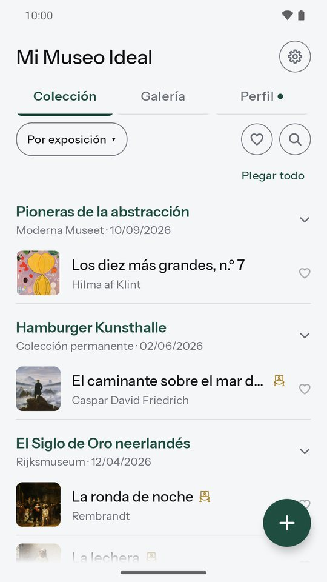
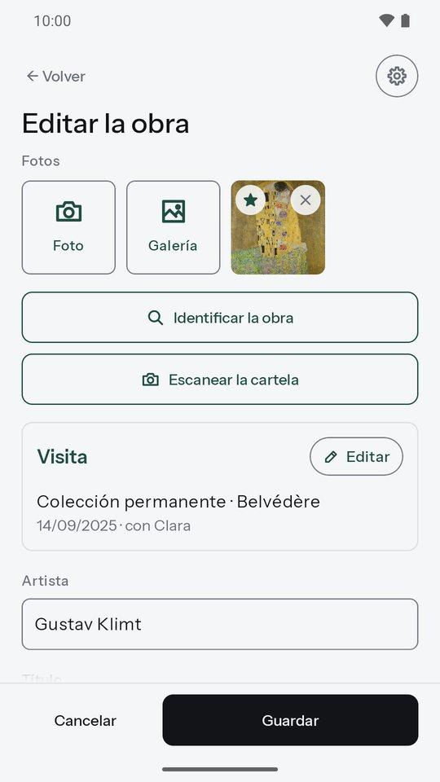
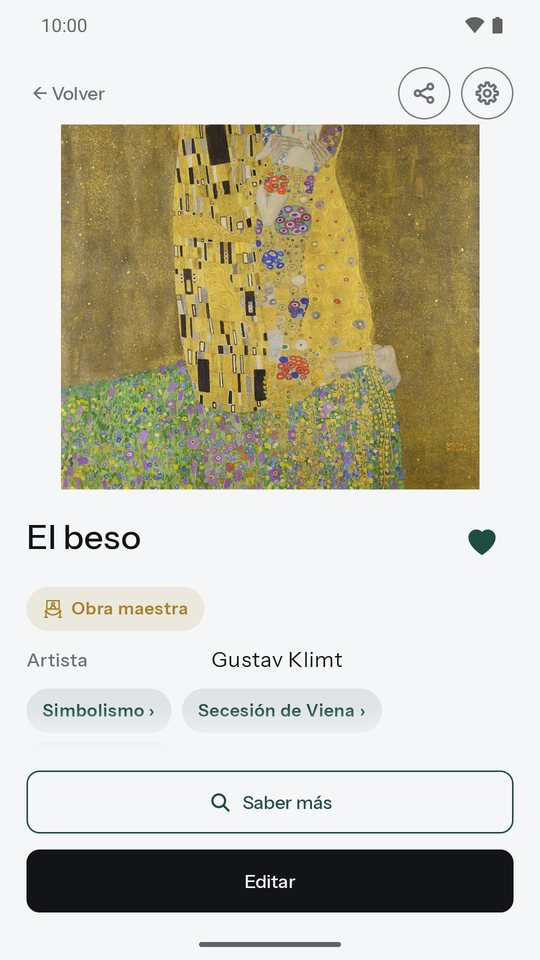
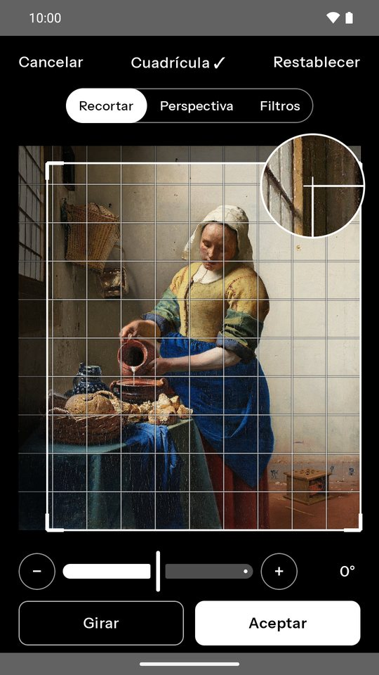
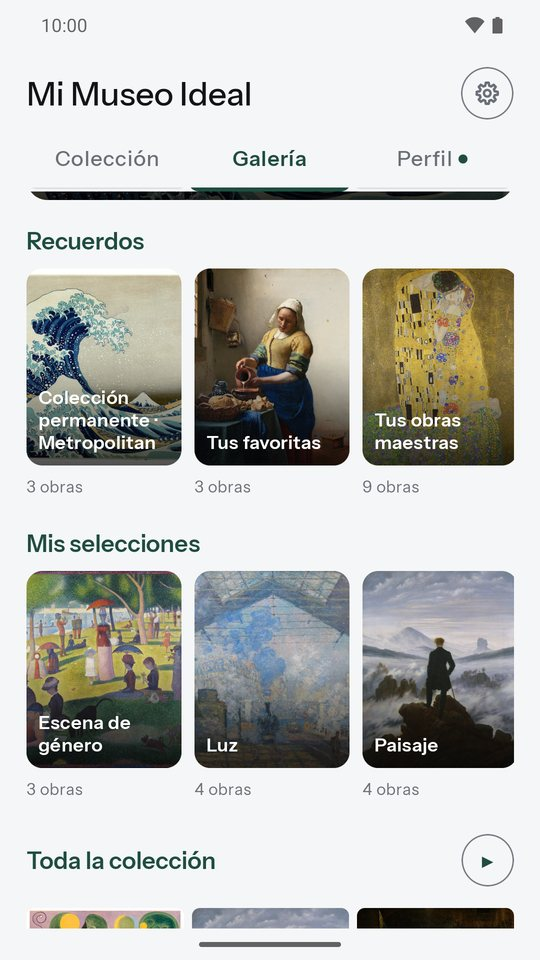
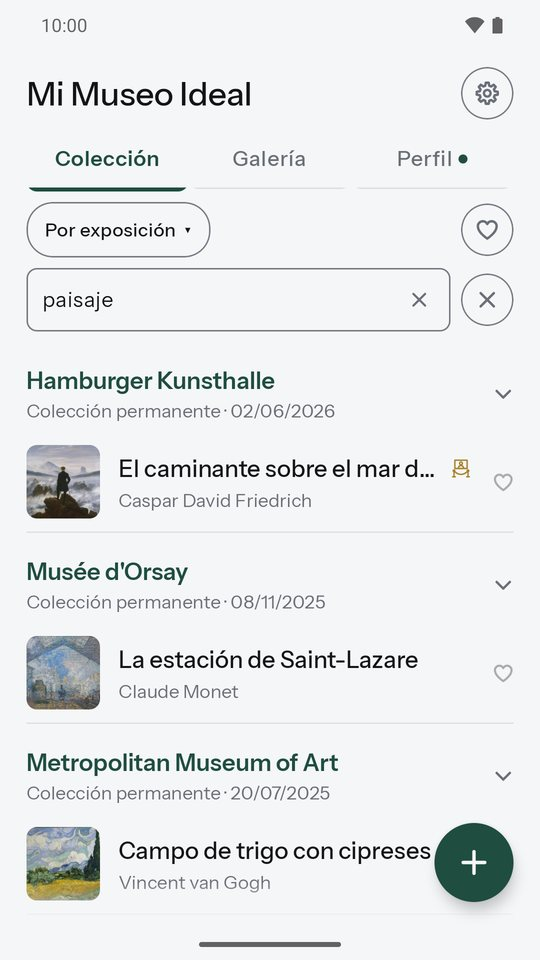
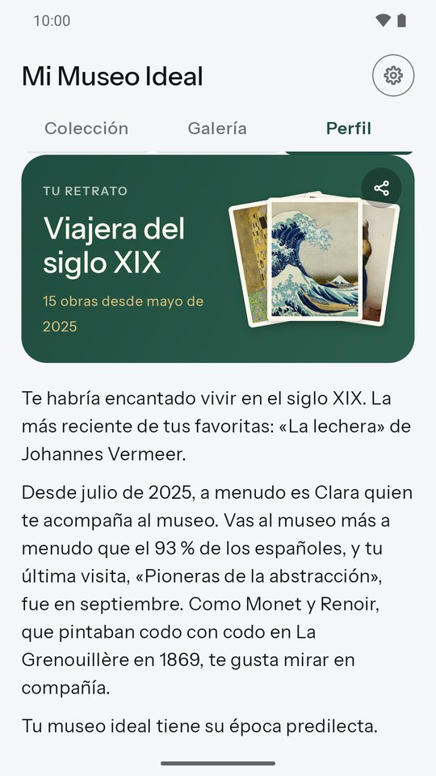
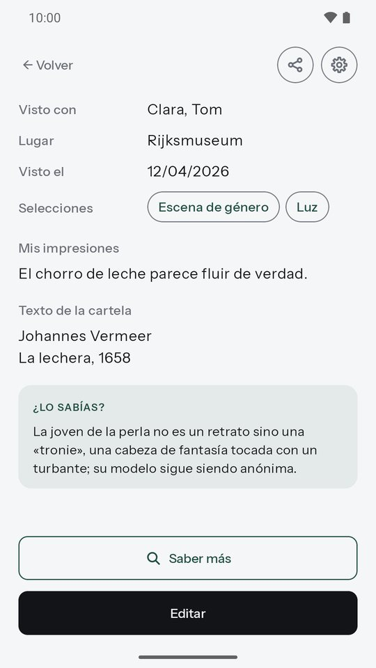
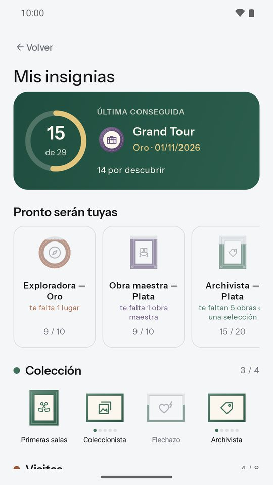
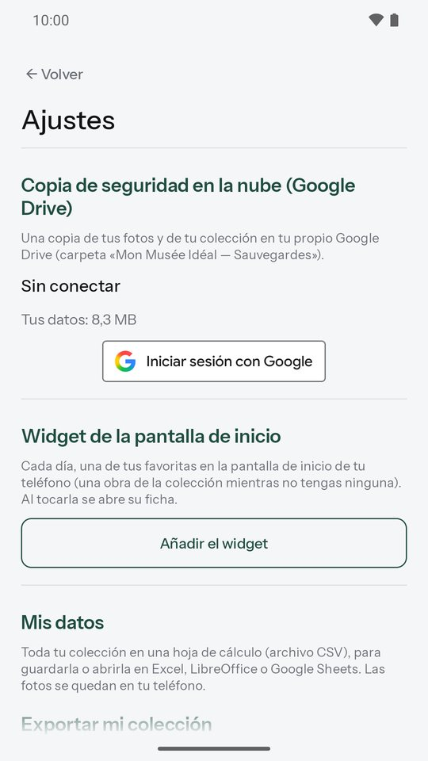

Mi Museo Ideal
Guarda las obras que te han emocionado.
¿Una obra te ha emocionado en una exposición? Hazle una foto, anota lo que te inspira y vuelve a encontrarla cuando quieras. Mi Museo Ideal es tu cuaderno de museos personal: sencillo y sin cuenta que crear.
Muy pronto en Google PlayApp Android gratuita · en seis idiomas

Todo lo que necesitas, nada más
Añade una obra en unos segundos
Fotografía la obra o impórtala de tu galería. Escanea la cartela, en el momento o desde una foto: la app lee el texto y te propone el artista y el título, directamente en tu teléfono. El nombre del artista se sugiere mientras escribes y las erratas se detectan; para el título, sus obras célebres. ¿Una obra desconocida? «Identificar la obra» la reconoce con Google Lens. La exposición, el lugar, la fecha y tus acompañantes se mantienen de una obra a otra. Por la noche, añade todas tus fotos de una vez: una obra por foto, con la fecha de las fotos.

Tus favoritas, con un toque
Toca el corazón de una obra, en la lista o en su ficha, y pasa a tus favoritas. Junto a la búsqueda, un filtro muestra solo ellas, ordenadas por exposición, fecha, lugar o artista. Tu museo ideal de un vistazo.
Guarda lo que te importa
Tus impresiones, el texto de la cartela, tus propias selecciones como «Para volver a ver». Varias fotos por obra, fáciles de recortar o girar, y tu museo preferido propuesto por defecto. Un widget muestra cada día una obra de tu colección en la pantalla de inicio.

Fotos de museo, retocadas
Las fotos tomadas en el museo suelen salir torcidas o mal iluminadas. Recorta con precisión con la lupa, endereza la perspectiva y deja que «Auto museo» corrija la iluminación de las salas. La foto antigua solo se sustituye cuando confirmas el retoque.

Tu galería
Todas tus obras en grande, como en las paredes de un museo: una obra del día, recuerdos preparados para ti (tus favoritas, tu artista favorito, tus movimientos, tus visitas con un ser querido…), tus propias selecciones, creadas con una pulsación larga, y una presentación para enseñarlas.

Encuéntralo todo fácilmente
Tu colección ordenada por exposición, fecha, lugar o artista, y una búsqueda en todos tus textos: título, artista, exposición, lugar, impresiones, cartela. Secciones plegables y una pulsación larga para editar toda una exposición o varias obras a la vez.

Tu retrato de amante del arte
El Perfil traza tu retrato, que evoluciona con tus visitas: tu artista favorito, tu museo preferido, tu acompañante de museo, con qué frecuencia vas al museo comparado con la media en España, y tus obras por artista, movimiento, época y lugar. Toca un movimiento para descubrir su historia y tus obras. Comparte tu retrato como imagen, sin los nombres de tus acompañantes.

¿Lo sabías?
Más de 900 anécdotas verificadas sobre artistas y museos: en las fichas de tus obras, en tu retrato y cada día al principio de tu colección. Además, más de 240 movimientos presentados en pocas líneas. El chorro de leche de «La lechera», las palomas de Picasso en Barcelona…

Insignias para coleccionar
Grand Tour, Cuatro estaciones, Noche de los museos, Todoterreno… 29 insignias que ganar mientras visitas, como pequeños cuadros cuyo marco se enriquece del bronce al diamante, cada una con una anécdota de historia del arte. Todas se ven de antemano, y tus próximos objetivos muestran las que tienes al alcance.

Tus datos son tuyos
Todo se guarda en tu teléfono. Sin cuenta, sin publicidad. Si quieres, una copia de seguridad en tu propio Google Drive, con restauración en un teléfono nuevo; puedes borrarla desde la app. Y toda tu colección se exporta a una hoja de cálculo.

De un vistazo
Tu privacidad, lo primero
- Sin cuenta que crear: no sabemos quién eres.
- Tus fotos y notas se quedan en tu teléfono, nunca en nuestros servidores.
- Sin publicidad, sin venta de datos.
- La cartela se lee en tu teléfono.
¿Una pregunta, una idea?
Escríbenos: artory.app@gmail.com